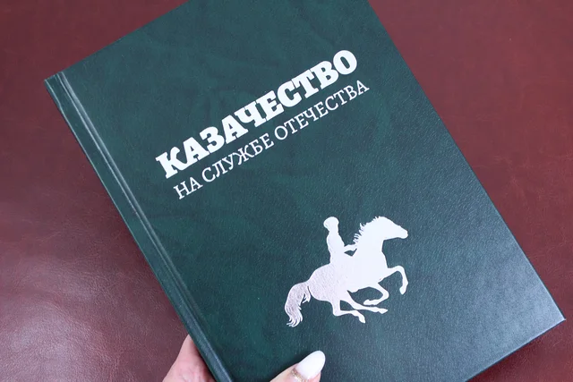

Архив типографии · 30.12.2021
КАЗАЧЕСТВО НА СЛУЖБЕ ОТЕЧЕСТВА
Ректор Московского государственного университета технологий и управления имени К.Г.

Разумовского (Первый казачий университет), С.Н. Чеботарев, выразил благодарность коллективу ООО «Полиграфический комплекс КЕМ» за «добропорядочность, оперативность и профессионализм» в работе по изготовлению 2-го учебного пособия МГУТУ им. Разумовского (ПКУ) «Казачество на службе Отечества».
«Хочется отметить высокий уровень работы компании на всех этапах выполнения заказа, индивидуальный подход и оперативность в принятии решений. Надеемся на дальнейшее сотрудничество».
ПК КЕМ участвовал в создании второго учебного пособия МУГТУ им. Разумовского (ПКУ) «Казачество на службе отечества». Книга выполнена в качественном переплетном материале с серебряным тиснением на обложке и красочными иллюстрациями на страницах самого учебника.
Учебное пособие знакомит нас с таким уникальным феноменом, как казачество. Книга показывает «исторический вклад казаков в развитие России, духовную и материальную культуру казачества, его современное состояние». Авторы с гордостью повествуют о подвигах казаков во время Великой Отечественной войны, отмечая их отвагу, мужество и подлинный героизм.
Это пособие может быть использовано при изучении программ дополнительного профессионального образования, а также вызвать интерес у людей, которые желают самостоятельно познакомиться с различными аспектами жизни казаков.
ПК КЕМ уже на протяжении 30 лет является одной из лучших типографий полного цикла. Главной задаче нашей типографии является качество готового изделия. Для того, чтобы выполнить все обязательства перед заказчиком, наша типография вкладывает значительные средства в обновление печатного и послепечатного оборудования, а также в тщательный контроль за качеством готовой продукции.
Мы рады новым идеям и ждём Ваши креативные проекты. Наши менеджеры всегда находятся на связи и полностью отдаются поставленной задаче.
Перед тем, как печатать книгу в первый раз, Вам необходимо определиться с выбором
- подобрать подходящий переплёт; определиться с количеством экземпляров, форматом;
- выбрать количеством страниц;
- также на качество будут влиять выбор бумаги, объёма вклейки, материала и красочности обложки.
Ждем Ваших заказов!!!